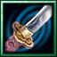
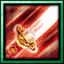
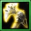
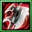
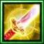
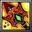
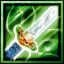
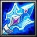

| 物品名稱 | 圖片 | 合成需求和總價格 | 說明 | |
| 逆刃刀(Q) |  | 打刀(1200)+強化鋼(300)+役法輪(4500)=逆刃刀(6000) | 攻擊+80 攻速+25% 攻擊時10%擊暈敵人0.7秒 |
|
| 琉璃光姬(W) |
杵杖(1100)+法術書(2450)+錫仗(2200)+血之寶石(2300)=琉璃光姬(8050) |
攻擊+20 所有能力+15 智慧+30 [使用]施展緩慢術或自我恢復或妖火 緩慢術(W) 讓一個敵方部隊的移動速度減少50%。 持續10秒。 消耗法力100 自我恢復(E) 每秒恢復指定友方部隊50點生命值，持續20秒。 消耗法力250 妖火(R) 降低指定目標的部隊裝甲15點，並可以看到這個部隊。 持續25秒。 消耗法力150 妖火效果不會累積，會被法術免疫解除效果 等待時間0.5秒 |
||
| 嗜血妖刀(E) |
 | 妖刀(3400)+能量鋼(1900)+強化鋼(300) = 嗜血妖刀(5600) | 攻擊+50 所有能力+10 攻擊時恢復傷害20%的生命 |
|
| 巨龍(R) |
 | 巨斧(2100)+薙刀(1700)+再生鋼(650)+強化鋼(300)=巨龍(4750) | 攻擊+43，
力量+15，
每秒回血+10 [使用]施展斬空波對距離950內的敵人造成480點傷害，區域範圍150 消耗法力150，等待時間26秒 |
|
| 吉鋼鐵(A) |
 | 巨斧(2100)+精鋼爪(2850)+強化鋼(300)=吉鋼鐵(5250) | 攻擊+68，
力量+5 [使用]施展地裂擊造成800距離的敵人540傷害並震暈1.5秒 消耗法力150，等待時間45秒 |
|
| 忍者匕首(S) |
鋒利短劍(1450)+短甲(1300)+強化鋼(300) =忍者匕首 (3050) | 攻擊+40，
裝甲+7 [使用]進入隱形狀態，持續10秒，施展技能或攻擊時現形 消耗法力100，等待時間40秒 |
||
| 凍雲(D) |
雪走(3940)+太刀(1600)+強化鋼(300) = 凍雲(5840) | 攻擊+65，
攻擊速度+30%，
敏捷+10 攻擊時10%擊出範圍250的寒冰暴而造成200點傷害以及主要目標300點傷害， 並冰凍而緩慢移動速度與攻擊速度30%，持續7秒。 法球效果只取一個， 冰凍效果不會累積 |
||
| 和泉守兼定(F) |  | 打刀(1200)+靈魂寶石(825)+侍的徽章(700)+再生鋼(650)+強化鋼(300)=和泉守兼定(3675) | 攻擊+40，
所有能力+6，
每秒回血+10 [使用]恢復單一友方軍400點生命 消耗法力120，等待時間30秒 |
|
| 統率者鐵扇(Z) |  | 杵杖(1100)+兵法卷軸(1700)+能量剛(1900)+強化鋼(300) = 統率者鐵扇(5000) | 攻擊+15，
智慧+23，
所有能力+10 [使用]令300範圍內的敵人4秒內無法攻擊及施展法術，施展距離4000 消耗法力260，等待時間35秒 |
|
| 河豚毒(X) |  | 毒之戒指(1100)+河豚的毒囊(700)+打刀(1200)+強化鋼(300) = 河豚毒(3300) | 攻擊+40
攻擊令敵人中毒10秒，每秒受到40點傷害 |
|
| 神隱(V) |
 | 伏兵之卷(1030)+杵杖(1100)+強化鋼(300)+鐵木樹技(50)+孫子兵法之頁(6500) =8980 | 攻擊+80，
智慧+35，
所有能力+7 [使用]恢復附近700範圍的友方1000點生命並隱形15秒，施展技能或攻擊時現形 消耗法力1000，等待時間70秒 |